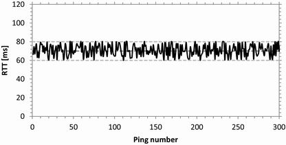
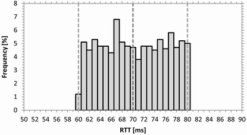

RTT with Uniform Jitter Distribution
A delay of 70 ms is configured and also a jitter of 10 ms with a uniform distribution.
In comparison to the previous setup (delay without jitter), the maximum RTT is increased by the jitter value and the minimum RTT is decreased by the jitter value.

RTT vs. ping request, uniform jitter distribution
Within the interval [delay - jitter, delay + jitter], the measured RTT values are distributed uniformly. The following figure shows the distribution of 1000 measured RTT values (previous figure shows the first 300 of these 1000 values).

Histogram of uniform jitter distribution